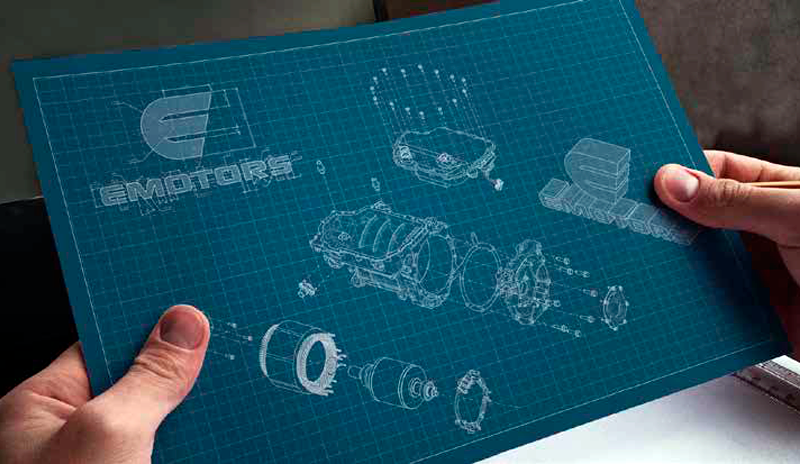
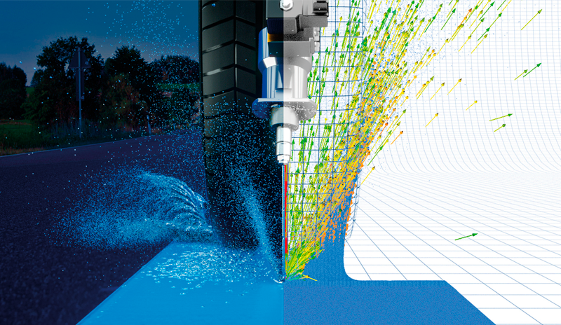
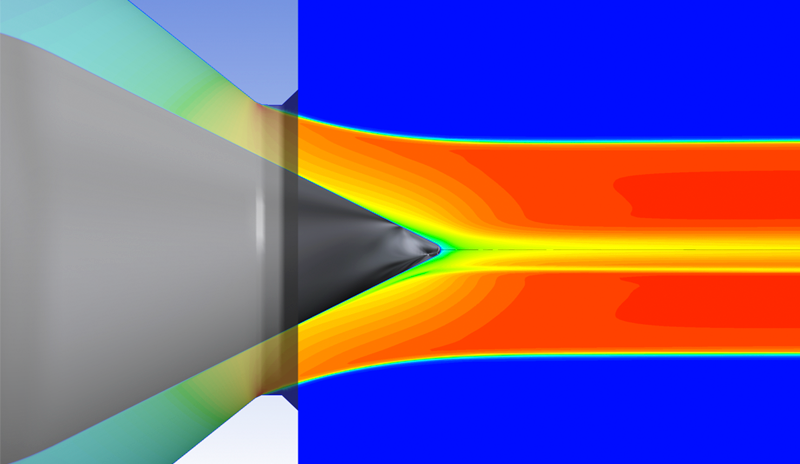
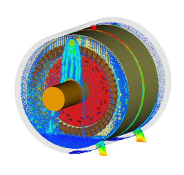
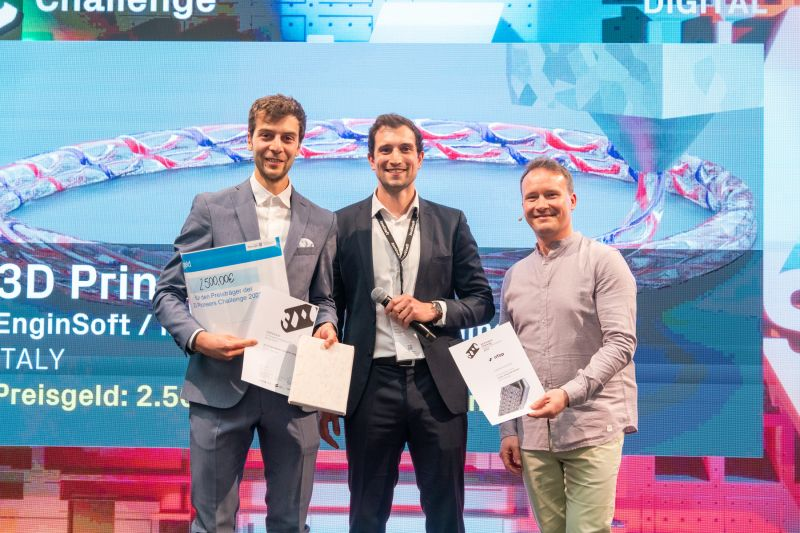

EMOTORS / 2022
Oil spray cooling for e-drives
Ioan Deac, Juan Wang & Michele Merelli
Read paper PDF · 5 pp.A portfolio by Michele Merelli
Eight years of following the oil.
From meshless simulation to engineering AI.
Particleworks / Engineering
Eight years with Particleworks, helping engineers see inside a running machine.
Conferences
10+ conferences discussing simulation with the engineers who design the hardware.
Splash lubrication and churning losses in e-drives.
Particleworks at CTISelected publications

Ioan Deac, Juan Wang & Michele Merelli
Read paper PDF · 5 pp.
Federico Accardo, Paolo Alberto Fina & Michele Merelli
Read paper PDF · 4 pp.
M. Minozzo, R. Bergamin, M. Merelli & M. Galbiati
Read paper PDF · 4 pp.
Polestar / IEEE IEMDC 2023
I co-authored two papers with Polestar. We checked stator oil flow against a prototype, then explored how oil could cool the rotor from within.
Image from Gabriele Puccio’s Polestar presentationPapers and images from the EnginSoft Newsletter and Futurities © EnginSoft. Publisher’s notice.
Erfurt / 2023

Design exploration / modeFRONTIER
Engineering AI / Today
For Neural Concept
I turn a simulation engineer’s question into a demo a customer can interrogate. That’s the work I’d like to do with Neural Concept.
Get in touchLinkedIn